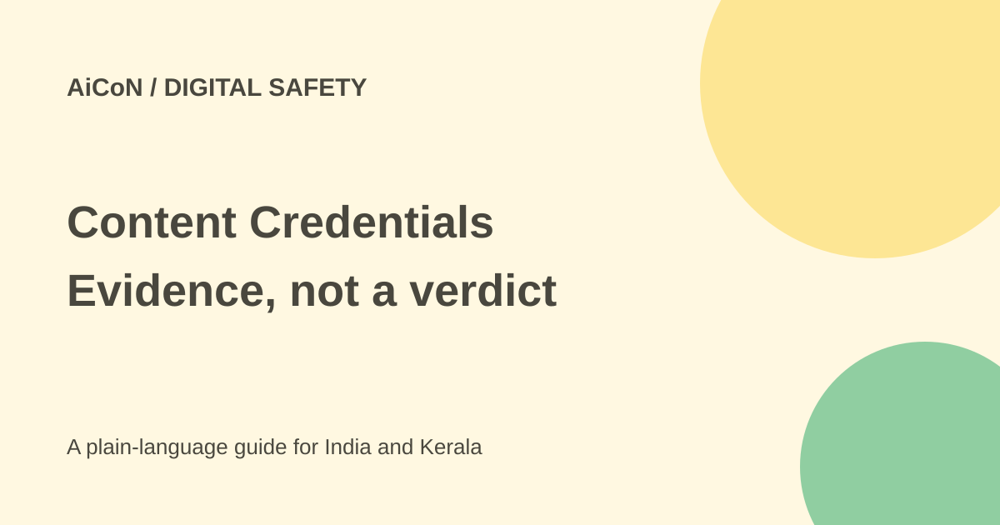

Content Credentials: inspect a file, do not guess authenticity
Santa Cruz Software's Provenance Detection tool reads embedded Content Credentials in a file. It can show recorded creation and editing history. It is a metadata inspector, not a detector that proves whether any image is real or AI-generated.

What are Content Credentials?
Content Credentials are provenance records based on C2PA. Provenance means information about where a file came from and what happened to it. A manifest can record tools, ingredients and editing actions instead of leaving a viewer to guess from the appearance.
A record of AI involvement means that involvement was recorded in the file. It does not show every unrecorded earlier step, and a real-looking picture can still depict a false event. File history and factual truth are different questions.
What does this inspector read?
The tool lists JPEG, PNG, WebP, TIFF, SVG, MP4/MOV, PDF, WAV/MP3 and standalone .c2pa files. Its visible file limit is 250 MB. It searches for embedded manifests and decodes the structure, actions, generator and source-type fields.
It describes parsing in the browser tab with nothing sent to Santa Cruz Software or another party. That is the maker's processing statement, not an independent network audit. Do not confuse choosing a local file in this tool with uploading it to a different verification service.
How to check a file carefully
- Keep an unmodified copy of the original file and note where you received it.
- Open the exact official Provenance Detection page.
- Select a supported file smaller than the stated limit.
- Read whether an embedded manifest is present. Look at recorded tools, source type, ingredients and actions.
- Keep the downloaded JSON report if the tool offers it, along with the original file.
- If cryptographic trust matters, use the separate official trust-chain route described by the page. Read its own file-processing terms before continuing.
- Compare provenance with the original publisher, date, context and independent evidence.
- After editing or converting your own file, check again to see whether the credentials survived.
No credentials does not mean fake
Many files never contain a manifest. Resaving, resizing or publishing through a platform can strip metadata. A screenshot is also a new file and may not preserve the earlier file's record.
Therefore, no credentials is not evidence that a picture is genuine, and it is not evidence that it is AI-made. Avoid publicly accusing a person based on that result. Seek the original source and other verification.
Structural read-out versus cryptographic trust
The site explicitly says it does not replace full cryptographic trust-list validation. It finds and decodes the embedded structures; the trust of a signature and its chain requires further checks.
A readable history is not a completed signature-verification result. Likewise, a valid provenance signature establishes the signed assertions and their integrity, not the truth of every claim made by a photograph or document.
Free or paid?
The original post describes this as a free browser tool, and the current page exposes its inspection interface without a paid-plan price or sign-up demand. No paid inspection fee was found in the checked page. We did not run an actual file through it.
No Indian price is quoted. Separate asset-management services, editing tools or official trust validators can have their own access and terms.
For Kerala readers and creators
Use it as one check before forwarding a surprising image or publishing an asset. Keep the source file, not only a WhatsApp-compressed copy. For a client asset, compare rights and licence evidence separately from the manifest.
If you add AI-assisted edits to your own work, check that the recorded history matches the edits and that export has not removed it. Do not treat missing metadata as permission to use somebody else's file.
What changed since the original post?
The 250 MB and browser-local processing claims remain visible. This guide explains the tool's structural-only scope and separates provenance from real-versus-fake judgements. No sample inspection or full signature validation was performed.
Frequently asked questions
Can it detect all AI images?
No. It reads credentials already present in the file.
Does no manifest prove a real photograph?
No. There may be no record or it may have been stripped.
Is it full cryptographic validation?
No. The page explicitly points to a separate trust-chain check.
Sources: Actual free file inspector · Content Credentials explanation. Checked 7 October 2026.